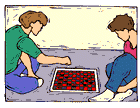
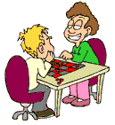
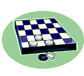

|  | Checkers Club |
 |
Cherokee Creek Middle School has a checkers club. Sad to say, they are in a bit of a slump this semester. The members have only scored 40 wins out of 90 games to date in their various inter-school competitions..Then they found a new coach, who inspired them and significantly improved their overall level of play. This month they went on a hot streak, winning 3 out of every 5 games played. They now are quite happy at 52%.
How many games did they play to achieve that great turn-around?
Extra: What is the minimum number of games that they must have played to first bring their percentage above 50%?

| Comments? Send e-mail. | Back to top | Go back to Home Page | Go back to Contents |